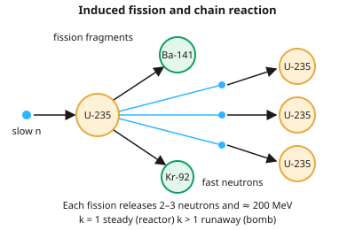

A-level Physics Year 13 · Topic 33
Nuclear power and safety
Nuclear power and safety is about releasing energy from the nucleus, and managing the risks.
We will study induced fission, chain reactions and critical mass, and how a thermal reactor is controlled.
Then we compare fission with fusion, and look at nuclear waste, safety and risk assessment.
- 4 subtopics
- 161 questions
- Free: 33.1 notes and 10 questions
In this topic
- 33.1Induced fission, chain reactions and critical massFree below · 28 questions
- 33.2Fission reactors: moderator, control rods, coolant and shieldingOpen in Full Marks · 30 questions
- 33.3Nuclear fusion: conditions, confinement and comparison with fissionOpen in Full Marks · 42 questions
- 33.4Nuclear waste, safety and risk assessmentOpen in Full Marks · 61 questions
33.1 · Free notes
Induced fission, chain reactions and critical mass

Key points
- Induced fission happens when a nucleus such as U-235 absorbs a thermal neutron. It becomes unstable U-236 and splits into two daughter nuclei (fission fragments) plus 2–3 neutrons, releasing energy.
- Example: ²³⁵₉₂U + ¹₀n → ¹⁴¹₅₆Ba + ⁹²₃₆Kr + 3 ¹₀n. Check that nucleon number (236) and proton number (92) are both conserved on each side.
- Energy is released because the fragments have a higher binding energy per nucleon (≈8.5 MeV) than uranium (≈7.6 MeV). The total is about 200 MeV (≈3.2 × 10⁻¹¹ J) per fission, mostly as kinetic energy of the fragments, which heats the fuel.
- The energy released equals the mass defect times c²: ΔE = Δmc², with 1 u = 931.5 MeV. Equivalently, it is the total binding energy of the products minus that of the reactants.
- Fission fragments are neutron-rich, so they are β⁻ emitters with a range of half-lives. This is why spent fuel is intensely radioactive.
- A chain reaction occurs when neutrons released by one fission induce further fissions. The neutron multiplication factor k is the average number of neutrons from each fission that go on to cause another fission.
- k = 1 is critical (steady power, as in a reactor). k < 1 is subcritical (the reaction dies away). k > 1 is supercritical (the fission rate grows exponentially, as in a bomb).
- Critical mass is the minimum mass of fissile material needed to sustain a chain reaction. Below it, too many neutrons escape through the surface (surface-area-to-volume ratio too large) before causing fission.
- Critical mass depends on shape (a sphere has the smallest surface-area-to-volume ratio), purity or enrichment, and whether a neutron reflector surrounds the fuel.
- Slow (thermal) neutrons, ≈0.025 eV, are far more likely to be captured by U-235 than fast neutrons (≈1 MeV). Fast neutrons from fission therefore have to be slowed by a moderator in a thermal reactor.
- Natural uranium is 99.3% U-238 and only 0.7% U-235, and U-238 absorbs neutrons without fissioning. Reactor fuel is therefore enriched to about 3–5% U-235.
- Power calculation: P = (fissions per second) × (energy per fission). Convert MeV to joules using 1 eV = 1.60 × 10⁻¹⁹ J.
In more detail
- Worked energy per fission: about 200 MeV in total = 200 × 1.6 × 10⁻¹³ = 3.2 × 10⁻¹¹ J.
- Worked mass defect: ²³⁵U (235.0439 u) + n (1.0087 u) → ¹⁴¹Ba (140.9144 u) + ⁹²Kr (91.9262 u) + 3n (3.0261 u) → Δm = 0.186 u → about 173 MeV released at once.
- Worked power: a 3.0 GW thermal reactor needs 3.0 × 10⁹ ÷ 3.2 × 10⁻¹¹ = 9.4 × 10¹⁹ fissions every second.
- Worked fuel use: that is 9.4 × 10¹⁹ × 3.9 × 10⁻²⁵ kg ≈ 3.7 × 10⁻⁵ kg s⁻¹, about 3 kg of uranium-235 each day.
Practice
Induced fission, chain reactions and critical mass: 10 questions
Pick an answer to check it, or open the answer for the explanation.
1. Which neutron is most likely to induce fission in U-235 in a thermal reactor?
- A beta particle from a fission fragment
- A slow neutron of about 0.025 eV
- A fast neutron of about 1 MeV
- An alpha particle from a nearby nucleus
Show answer
B: A slow neutron of about 0.025 eV. Slow (thermal) neutrons have a much greater probability of being captured by U-235 and causing fission than fast neutrons. This is why a moderator is used.
2. In ²³⁵₉₂U + ¹₀n → ¹⁴¹₅₆Ba + ˣ₃₆Kr + 3¹₀n, what is the nucleon number x of the krypton?
- 90
- 92
- 95
- 91
Show answer
B: 92. Nucleon number is conserved: 235 + 1 = 141 + x + 3, so x = 92. The proton numbers also balance (92 = 56 + 36).
3. A reactor runs at constant power. On average, how many neutrons from each fission go on to cause a further fission?
- Exactly two or three
- Exactly one
- None, as the reaction is driven externally
- Fewer than one
Show answer
B: Exactly one. Steady power means k = 1. Although 2–3 neutrons are released per fission, the rest are absorbed by the moderator, control rods and fuel, or escape.
4. Why does a minimum critical mass exist for a fissile material?
- The nuclei are too far apart for the strong force to act
- Fission releases too little energy per nucleus to continue
- U-235 nuclei decay by alpha emission before absorbing neutrons
- Too many neutrons escape through the surface to sustain the reaction
Show answer
D: Too many neutrons escape through the surface to sustain the reaction. Neutrons escape through the surface, and the surface-area-to-volume ratio falls as mass rises. Below the critical mass too many are lost, so k < 1 and the reaction dies away.
5. Which change would reduce the critical mass of a sphere of U-235?
- Surrounding it with a neutron reflector
- Cooling it to a lower temperature
- Reshaping it into a long thin rod
- Mixing in some U-238
Show answer
A: Surrounding it with a neutron reflector. A reflector returns escaping neutrons to the fuel, so less fuel is needed. U-238 absorbs neutrons and a rod has a larger surface-area-to-volume ratio, both raising critical mass.
6. Why will a lump of natural uranium not sustain a fast-neutron chain reaction?
- About 0.7% is U-235, and U-238 absorbs neutrons without fission
- Its nuclei are too heavy for neutrons to enter
- It emits too many alpha particles for neutrons to pass
- It contains no U-235, only U-238
Show answer
A: About 0.7% is U-235, and U-238 absorbs neutrons without fission. Natural uranium is only about 0.7% U-235, while the abundant U-238 captures neutrons without fissioning. So too few neutrons go on to cause fission.
7. Why is energy released when U-235 undergoes fission?
- Fission fragments have lower binding energy per nucleon than U-235
- The fragments have more total rest mass than the original nucleus
- Fission fragments have higher binding energy per nucleon than U-235
- Neutrons gain energy by absorbing electrons from the uranium atom
Show answer
C: Fission fragments have higher binding energy per nucleon than U-235. The products are more tightly bound (≈8.5 vs ≈7.6 MeV per nucleon). Total binding energy increases and mass decreases, and the difference is released as energy.
8. Average binding energy per nucleon is 7.6 MeV for U-235 and 8.5 MeV for the fragments. Estimate the energy released per fission.
- 2000 MeV
- 210 MeV
- 21 MeV
- 0.9 MeV
Show answer
B: 210 MeV. The gain is ≈0.9 MeV per nucleon over 235 nucleons: 235 × 0.9 ≈ 210 MeV, close to the accepted value of about 200 MeV.
9. Why are the fission fragments of U-235 radioactive?
- They have too many neutrons for stability and decay by β⁻ emission
- They have too many protons for stability and decay by β⁺ emission
- They absorb gamma rays from the reactor core
- They are too heavy and so emit alpha particles
Show answer
A: They have too many neutrons for stability and decay by β⁻ emission. Fragments inherit uranium's high neutron-to-proton ratio, which is too high for medium-mass nuclei. They are neutron-rich and undergo β⁻ decay, often with γ emission.
10. In a chain reaction each fission leads on average to 1.05 further fissions. The reaction is:
- subcritical, with power dying away
- impossible, since k cannot exceed 1
- critical, with steady power
- supercritical, with power increasing
Show answer
D: supercritical, with power increasing. k = 1.05 > 1 means each generation has more fissions than the last, so the rate grows exponentially. This is supercritical.
Keep going in Full Marks
Full Marks has 28 questions on Induced fission, chain reactions and critical mass (18 more than here), set out in practice levels. You also get notes and 3D models for all 4 subtopics of Nuclear power and safety, plus games, timed exams and past papers.